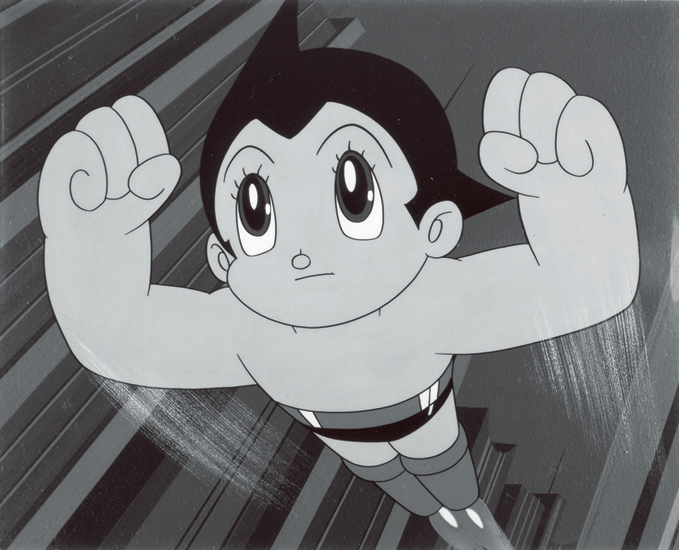

История аниме корнями уходит к началу XX-го столетия, когда японцы стали проявлять заметный интерес к иностранным техникам создания анимационных фильмов. Несмотря на то, что эксперименты с анимацией проводились в Японии и до этого, первым заметным творением, относимым к аниме, стал показ «Легенды о Белой Змее», мультфильма студии Toei. Первый аниме-сериал Otogi Manga Calendar выпустила студия Otogi. Он представлял собой чёрно-белые исторические мультфильмы. В 1963 году Осаму Тэдзуки, прозванный «Богом манги», основал студию Mushi Productions и выпустил свой первый аниме-сериал Tetsuwan Atom. Это стало началом бума аниме. В течение 1970-x годов аниме активно изменялось, разрывая связи со своими иностранными прародителями и рождая новые жанры, такие, как меха. Появлялись такие произведения, например, как Lupin III или Mazinger Z. Многие известные режиссёры, в частности Хаяо Миядзаки, Осаму Дэдзаки, Ёсиюки Томино, Мамору Осии, и Ёсиаки Кавадзири, начинали свою карьеру в эти годы. К 1980-м годам аниме и манга широко распространились в Японии, и переживали свой так называемый «Золотой век». Были выпущены первые сериалы из цикла Gundam, начала свой путь к вершине Румико Такахаси. В 1988 году полнометражный фильм «Акира» установил рекорд бюджета аниме (~10 млн долларов — в показатель включены затраты на производство и маркетинговые расходы[1]) и создал совершенно новый стиль анимации. 1990-е и 2000-е годы стали временем широкого признания аниме за пределами Японии. «Акира», «Манускрипт ниндзя» и вышедший в 1995 году «Призрак в доспехах», впервые объединивший традиционную анимацию и компьютерную графику, получили известность по всему миру. В 1997 году полнометражный аниме-фильм «Принцесса Мононоке» собрал 160 миллионов долларов в Японии. Многократно возросло число как поклонников аниме, так и зрителей, смотрящих его от случая к случаю. В то же время в Японии продолжали совершенствоваться технологии создания и отрисовки аниме: студии переходили на компьютерную графику, активно применяя трёхмерную анимацию. Из детских мультипликационных фильмов начала XX-го века японская анимация превратилась в культуру, творящую разнообразные, серьёзные и забавные, эмоциональные и наивные, предназначенные для подростков, детей и взрослых произведения.
